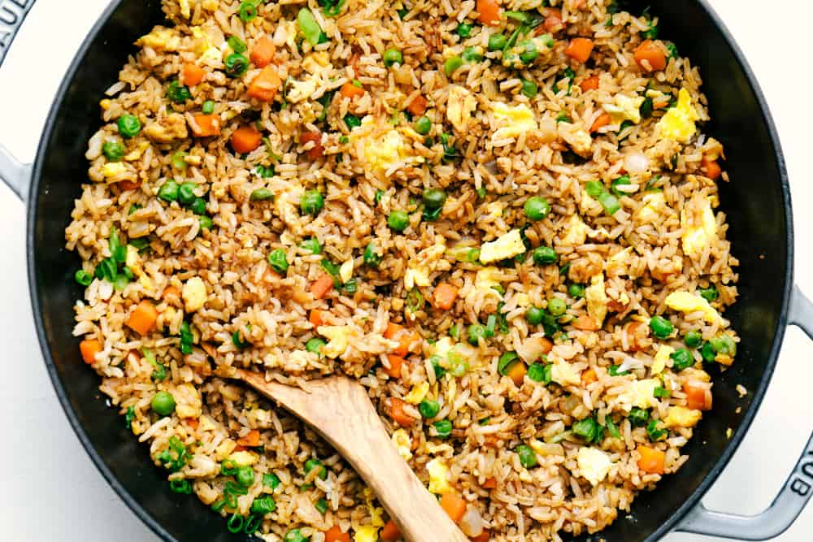

Easy Fried Rice

Description
Fried Rice is a combination of long grained rice, mixture of warm peas, carrots and onions with scrambled eggs mixed all together! You will not be getting take out any longer!
Ingridients
- White long grain rice
- Small white onion
- Vegetables- Peas and Carrots.
- Eggs
- Sesame Oil
- Soy Sauce
- Green Onions
Steps
- Turn your skillet to medium high heat and pour sesame oil into the bottom of your skillet and add the onion, peas and carrots. Fry this until they are tender.
- Slide the veggies to the side. Pour the beaten eggs onto the other side. Use a spatula to scramble the eggs. Mix them together with the veggies.
- Add the rice. Combine it with the veggie and egg mixture. Pour the soy sauce on top and stir until it is heated throughout. Garnish with green onions.
Return to the main page